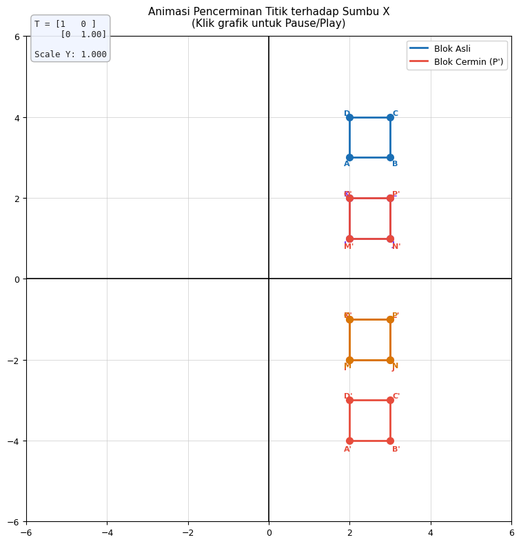

Transformasi Pencerminan Titik#
Blok Utama (biru): posisi asli titik GeoGebra A(2,3) B(2,4) C(3,4) D(3,3)
Blok Cermin (merah): refleksi terhadap sumbu X
Transformasi: $\(T = \begin{bmatrix}1 & 0\\0 & s\end{bmatrix} \quad \text{dengan } s \text{ turun dari } 1 \to 0\)$
import numpy as np
import matplotlib.pyplot as plt
import matplotlib.animation as animation
import matplotlib.patches as patches
from matplotlib.lines import Line2D
from IPython.display import HTML, display
# ── Titik-titik dari GeoGebra kamu ──────────────────────────────
TITIK = {
'A': (2, 3), 'B': (2, 4), 'C': (3, 4), 'D': (3, 3),
'E': (2,-3), 'F': (3,-3), 'G': (2,-4), 'H': (3,-4),
'I': (2, 2), 'J': (3, 2), 'K': (2, 1), 'L': (3, 1),
'M': (2,-1), 'N': (3,-1), 'O': (2,-2), 'P': (3,-2),
}
FRAMES = 160
PAUSE_F = 30
# ── Setup figure ────────────────────────────────────────────────
fig, ax = plt.subplots(figsize=(9, 8))
fig.patch.set_facecolor('white')
ax.set_facecolor('white')
ax.set_xlim(-6, 6)
ax.set_ylim(-6, 6)
ax.set_aspect('equal')
ax.axhline(0, color='black', linewidth=1.2, zorder=2)
ax.axvline(0, color='black', linewidth=1.2, zorder=2)
ax.grid(True, color='#cccccc', linewidth=0.5)
ax.tick_params(labelsize=9)
ax.set_title('Animasi Pencerminan Titik terhadap Sumbu X\n'
'(Klik grafik untuk Pause/Play)',
fontsize=11, pad=10)
# ── Warna per pasangan blok ──────────────────────────────────────
BLOK = [
{'asli': ['A','B','C','D'], 'warna': '#1a6fb5'},
{'asli': ['I','J','L','K'], 'warna': '#7c3aed'},
{'asli': ['M','N','P','O'], 'warna': '#d97706'},
]
# artists per blok
blok_artists = []
for blok in BLOK:
warna = blok['warna']
pts = [TITIK[k] for k in blok['asli']]
xs = [p[0] for p in pts]
ys = [p[1] for p in pts]
# Kotak asli
xmin, xmax = min(xs), max(xs)
ymin, ymax = min(ys), max(ys)
r_asli = patches.Rectangle(
(xmin, ymin), xmax-xmin, ymax-ymin,
lw=2, edgecolor=warna, facecolor='none', zorder=5
)
ax.add_patch(r_asli)
d_asli, = ax.plot([], [], 'o', color=warna, ms=7, zorder=6)
t_asli = [ax.text(0,0, lbl, color=warna, fontsize=8,
fontweight='bold', zorder=7)
for lbl in blok['asli']]
# Kotak cermin
r_cermin = patches.Rectangle(
(xmin, -ymax), xmax-xmin, ymax-ymin,
lw=2, edgecolor='#e74c3c', facecolor='none', zorder=5
)
ax.add_patch(r_cermin)
d_cermin, = ax.plot([], [], 'o', color='#e74c3c', ms=7, zorder=6)
lbl_cermin = [k+"'" for k in blok['asli']]
t_cermin = [ax.text(0,0, lbl, color='#e74c3c', fontsize=8,
fontweight='bold', zorder=7)
for lbl in lbl_cermin]
blok_artists.append({
'r_asli': r_asli, 'd_asli': d_asli, 't_asli': t_asli,
'r_cermin': r_cermin, 'd_cermin': d_cermin, 't_cermin': t_cermin,
'xmin': xmin, 'xmax': xmax, 'ymin': ymin, 'ymax': ymax
})
# ── Info teks matriks ────────────────────────────────────────────
mat_txt = ax.text(-5.8, 5.5, '', fontsize=9, color='#222',
fontfamily='monospace',
bbox=dict(boxstyle='round,pad=0.4', facecolor='#f0f4ff',
edgecolor='#aaaaaa', alpha=0.9))
# ── Legend ───────────────────────────────────────────────────────
legend_elements = [
Line2D([0],[0], color='#1a6fb5', lw=2, label='Blok Asli'),
Line2D([0],[0], color='#e74c3c', lw=2, label="Blok Cermin (P')"),
]
ax.legend(handles=legend_elements, loc='upper right',
fontsize=9, framealpha=0.9)
# ── State pause ──────────────────────────────────────────────────
state = {'paused': False}
def on_click(event):
if event.inaxes == ax:
state['paused'] = not state['paused']
fig.canvas.mpl_connect('button_press_event', on_click)
# ── Easing scale ─────────────────────────────────────────────────
def get_scale(frame):
if frame < PAUSE_F:
return 1.0
if frame >= FRAMES - PAUSE_F:
return 1.0
mid = FRAMES // 2
if frame <= mid:
t = (frame - PAUSE_F) / (mid - PAUSE_F)
t = 3*t**2 - 2*t**3
return 1.0 - t
else:
t = (frame - mid) / (FRAMES - PAUSE_F - mid)
t = 3*t**2 - 2*t**3
return t
cur_frame = [0]
def animate(frame):
if state['paused']:
frame = cur_frame[0]
else:
cur_frame[0] = frame
s = get_scale(frame)
all_artists = [mat_txt]
for ba in blok_artists:
xmin = ba['xmin']; xmax = ba['xmax']
ymin = ba['ymin']; ymax = ba['ymax']
# Blok asli: y dikompres
y0a = ymin * s
y1a = ymax * s
ba['r_asli'].set_y(y0a)
ba['r_asli'].set_height(max(y1a - y0a, 1e-6))
# sudut: BL, BR, TR, TL
cx = [xmin, xmax, xmax, xmin]
cy_a = [y0a, y0a, y1a, y1a]
ba['d_asli'].set_data(cx, cy_a)
off = [(-0.15,-0.2),(0.05,-0.2),(0.05,0.05),(-0.15,0.05)]
for tx, px, py, (dx, dy) in zip(ba['t_asli'], cx, cy_a, off):
tx.set_position((px+dx, py+dy))
all_artists += [ba['d_asli'], ba['r_asli']] + ba['t_asli']
# Blok cermin: refleksi
y0c = -ymax * s
y1c = -ymin * s
ba['r_cermin'].set_y(y0c)
ba['r_cermin'].set_height(max(y1c - y0c, 1e-6))
cy_c = [y0c, y0c, y1c, y1c]
ba['d_cermin'].set_data(cx, cy_c)
off2 = [(-0.15,-0.25),(0.05,-0.25),(0.05,0.05),(-0.15,0.05)]
for tx, px, py, (dx, dy) in zip(ba['t_cermin'], cx, cy_c, off2):
tx.set_position((px+dx, py+dy))
all_artists += [ba['d_cermin'], ba['r_cermin']] + ba['t_cermin']
mat_txt.set_text(f'T = [1 0 ]\n [0 {s:.2f}]\n\nScale Y: {s:.3f}')
return all_artists
ani = animation.FuncAnimation(
fig, animate, frames=FRAMES,
interval=40, blit=True, repeat=True
)
plt.tight_layout()
display(HTML(ani.to_jshtml()))
plt.close()
---------------------------------------------------------------------------
KeyboardInterrupt Traceback (most recent call last)
Cell In[2], line 161
157 interval=40, blit=True, repeat=True
158 )
159
160 plt.tight_layout()
--> 161 display(HTML(ani.to_jshtml()))
162 plt.close()
File ~\AppData\Local\Python\pythoncore-3.14-64\Lib\site-packages\matplotlib\animation.py:1388, in Animation.to_jshtml(self, fps, embed_frames, default_mode)
1384 path = Path(tmpdir, "temp.html")
1385 writer = HTMLWriter(fps=fps,
1386 embed_frames=embed_frames,
1387 default_mode=default_mode)
-> 1388 self.save(str(path), writer=writer)
1389 self._html_representation = path.read_text()
1391 return self._html_representation
File ~\AppData\Local\Python\pythoncore-3.14-64\Lib\site-packages\matplotlib\animation.py:1138, in Animation.save(self, filename, writer, fps, dpi, codec, bitrate, extra_args, metadata, extra_anim, savefig_kwargs, progress_callback)
1136 progress_callback(frame_number, total_frames)
1137 frame_number += 1
-> 1138 writer.grab_frame(**savefig_kwargs)
File ~\AppData\Local\Python\pythoncore-3.14-64\Lib\site-packages\matplotlib\animation.py:791, in HTMLWriter.grab_frame(self, **savefig_kwargs)
789 return
790 f = BytesIO()
--> 791 self.fig.savefig(f, format=self.frame_format,
792 dpi=self.dpi, **savefig_kwargs)
793 imgdata64 = base64.encodebytes(f.getvalue()).decode('ascii')
794 self._total_bytes += len(imgdata64)
File ~\AppData\Local\Python\pythoncore-3.14-64\Lib\site-packages\matplotlib\figure.py:3497, in Figure.savefig(self, fname, transparent, **kwargs)
3495 for ax in self.axes:
3496 _recursively_make_axes_transparent(stack, ax)
-> 3497 self.canvas.print_figure(fname, **kwargs)
File ~\AppData\Local\Python\pythoncore-3.14-64\Lib\site-packages\matplotlib\backend_bases.py:2157, in FigureCanvasBase.print_figure(self, filename, dpi, facecolor, edgecolor, orientation, format, bbox_inches, pad_inches, bbox_extra_artists, backend, **kwargs)
2154 # we do this instead of `self.figure.draw_without_rendering`
2155 # so that we can inject the orientation
2156 with getattr(renderer, "_draw_disabled", nullcontext)():
-> 2157 self.figure.draw(renderer)
2158 if bbox_inches:
2159 if bbox_inches == "tight":
File ~\AppData\Local\Python\pythoncore-3.14-64\Lib\site-packages\matplotlib\artist.py:94, in _finalize_rasterization.<locals>.draw_wrapper(artist, renderer, *args, **kwargs)
92 @wraps(draw)
93 def draw_wrapper(artist, renderer, *args, **kwargs):
---> 94 result = draw(artist, renderer, *args, **kwargs)
95 if renderer._rasterizing:
96 renderer.stop_rasterizing()
File ~\AppData\Local\Python\pythoncore-3.14-64\Lib\site-packages\matplotlib\artist.py:71, in allow_rasterization.<locals>.draw_wrapper(artist, renderer)
68 if artist.get_agg_filter() is not None:
69 renderer.start_filter()
---> 71 return draw(artist, renderer)
72 finally:
73 if artist.get_agg_filter() is not None:
File ~\AppData\Local\Python\pythoncore-3.14-64\Lib\site-packages\matplotlib\figure.py:3264, in Figure.draw(self, renderer)
3261 # ValueError can occur when resizing a window.
3263 self.patch.draw(renderer)
-> 3264 mimage._draw_list_compositing_images(
3265 renderer, self, artists, self.suppressComposite)
3267 renderer.close_group('figure')
3268 finally:
File ~\AppData\Local\Python\pythoncore-3.14-64\Lib\site-packages\matplotlib\image.py:134, in _draw_list_compositing_images(renderer, parent, artists, suppress_composite)
132 if not_composite or not has_images:
133 for a in artists:
--> 134 a.draw(renderer)
135 else:
136 # Composite any adjacent images together
137 image_group = []
File ~\AppData\Local\Python\pythoncore-3.14-64\Lib\site-packages\matplotlib\artist.py:71, in allow_rasterization.<locals>.draw_wrapper(artist, renderer)
68 if artist.get_agg_filter() is not None:
69 renderer.start_filter()
---> 71 return draw(artist, renderer)
72 finally:
73 if artist.get_agg_filter() is not None:
File ~\AppData\Local\Python\pythoncore-3.14-64\Lib\site-packages\matplotlib\axes\_base.py:3226, in _AxesBase.draw(self, renderer)
3223 if artists_rasterized:
3224 _draw_rasterized(self.get_figure(root=True), artists_rasterized, renderer)
-> 3226 mimage._draw_list_compositing_images(
3227 renderer, self, artists, self.get_figure(root=True).suppressComposite)
3229 renderer.close_group('axes')
3230 self.stale = False
File ~\AppData\Local\Python\pythoncore-3.14-64\Lib\site-packages\matplotlib\image.py:134, in _draw_list_compositing_images(renderer, parent, artists, suppress_composite)
132 if not_composite or not has_images:
133 for a in artists:
--> 134 a.draw(renderer)
135 else:
136 # Composite any adjacent images together
137 image_group = []
File ~\AppData\Local\Python\pythoncore-3.14-64\Lib\site-packages\matplotlib\artist.py:71, in allow_rasterization.<locals>.draw_wrapper(artist, renderer)
68 if artist.get_agg_filter() is not None:
69 renderer.start_filter()
---> 71 return draw(artist, renderer)
72 finally:
73 if artist.get_agg_filter() is not None:
File ~\AppData\Local\Python\pythoncore-3.14-64\Lib\site-packages\matplotlib\patches.py:641, in Patch.draw(self, renderer)
639 transform = self.get_transform()
640 tpath = transform.transform_path_non_affine(path)
--> 641 affine = transform.get_affine()
642 self._draw_paths_with_artist_properties(
643 renderer,
644 [(tpath, affine,
(...) 647 # transparent, but do if it is None.
648 self._facecolor if self._facecolor[3] else None)])
File ~\AppData\Local\Python\pythoncore-3.14-64\Lib\site-packages\matplotlib\transforms.py:2437, in CompositeGenericTransform.get_affine(self)
2435 return self._b.get_affine()
2436 else:
-> 2437 return Affine2D(np.dot(self._b.get_affine().get_matrix(),
2438 self._a.get_affine().get_matrix()))
KeyboardInterrupt:

Tabel Koordinat#
Titik Asli |
Cermin Sumbu X \(P'(x,-y)\) |
Cermin Sumbu Y \(P''(-x,y)\) |
|---|---|---|
\(A(2,3)\) |
\(A'(2,-3)\) |
\(A''(-2,3)\) |
\(B(2,4)\) |
\(B'(2,-4)\) |
\(B''(-2,4)\) |
\(C(3,4)\) |
\(C'(3,-4)\) |
\(C''(-3,4)\) |
\(D(3,3)\) |
\(D'(3,-3)\) |
\(D''(-3,3)\) |
\(I(2,2)\) |
\(I'(2,-2)\) |
\(I''(-2,2)\) |
\(J(3,2)\) |
\(J'(3,-2)\) |
\(J''(-3,2)\) |
\(K(2,1)\) |
\(K'(2,-1)\) |
\(K''(-2,1)\) |
\(L(3,1)\) |
\(L'(3,-1)\) |
\(L''(-3,1)\) |